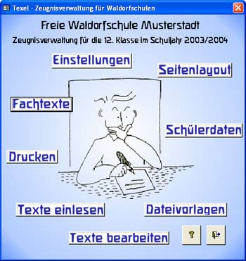

Texel-Hilfe

Einleitung
Beispiele
Überblick
Installation
Organisation
Einstellungen
Schülerdaten
Layout
Dateivorlagen
Schreiben
Einlesen
Korrigieren
Ausdrucken
Lückentexteditor
Kontakt
Eine Zeugnisverwaltung für Waldorfschulen
Diese Datenbank verwaltet die Fachtexte für die Textzeugnisse an Waldorfschulen
und druckt die Zeugnisse in frei gestaltbarem Layout aus.

Die Datenbankanwendung wurde unter Microsoft-Access programmiert.
Jeder Kollege bekommt eine Diskette mit Textdateien für jedes Fach, in die er seine Texte mit jedem gewöhnlichen Texteditor eingeben kann. Die Dateien werden von der Datenbank automatisch eingelesen und ausgedruckt.
Das Programm wurde an der Freien Waldorfschule Elmshorn von Veit Grösch entwickelt und ist für alle Waldorfschulen frei verfügbar.
Im Internet finden sie ein Forum zum Austausch von Erfahrungen und eine Seite mit häufig gestellten Fragen:
www.waldorf-elmshorn.de/Texel